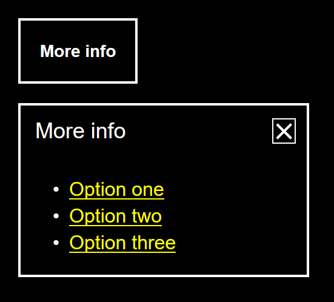

Information panels
The information panel is a specialized popup panel for supplementary content and functionality
- Version:
- 0.1.0
- Status:
- Published
Introduction
The Information panel borrows from both the Menu Button[1] and Dialog[2] ARIA authoring patterns. Most of the behaviour and semantics are in line with the Menu Button, but a close button is included like that of a dialog. Many of the accessibility features, including the management of focus between the button and panel support for closing the panel using the Esc key are present in both Menu Button and Dialog implementations.
As the GEL definition attests, the content of the panel is not strictly prescribed and can contain a combination of text, images, links, and other information and functionality. This document sets out the Information panel as a functional interaction mechanism, and the Reference implementation only contains basic example content. The Share tools component incorporates sharing functionality in an Information panel
Recommended markup
The following structure is expected, with notes to follow.
<div class="infopanel-example gel-infopanel">
<button class="gel-button gel-infopanel__button" type="button" aria-haspopup="true" aria-expanded="false">More info</button>
<div class="gel-infopanel__panel" role="group" aria-labelledby="unique-ref" style="width: 15rem;" hidden>
<div class="gel-infopanel__title-area"><span id="unique-ref" aria-hidden="true">More info</span>
<button class="gel-infopanel__close-button">
<span class="gel-sr">close</span>
<svg class="gel-icon gel-icon--text" focusable="false" aria-hidden="true">
<use xlink:href="path/to/static/images/gel-icons-all.svg#gel-icon-no"></use>
</svg>
</button>
</div>
<!-- panel content -->
</div>
</div>
-
class="gel-button": A standard<button>element takes thearia-haspopup="true"property andaria-expanded="false"state. The former indicates that the button secretes a popup (panel) and the later (set tofalseinitially) indicates whether that popup is in an expanded or collapsed state. -
class="gel-infopanel__panel": The panel itself takesrole="group"to indicate it's contents are related. A standard Menu Button[1:1] would expectrole="menu"here, but that would prescribe the presence of menu items (role="menuitem"etc.). Because Information panel contents diverge between instances, a more generic parent role is used. -
aria-labelledby: This associates the panel with its title'sid(id="unique-ref"in this example). This ensures the title is read out as the screen reader enters the panel. -
gel-infopanel__close-button: The close button has a visually hidden (but available to assistive technologies) text label of "close" to supplement the visible 'X' icon. The visually hidden span (achieved withclass="gel-sr") is preferred to usingaria-labelsincearia-labelis not translated by Google's or Microsoft's translation services[3]. -
focusable="false"andaria-hidden="true": Each icon, taken from the Gel Iconography suite must take these attributes to ensure the icon is not in focus order and is not erroneously identified by assistive technologies.
Recommended layout
The most important aspect of the layout is the alignment of the panel to its invoking button. If the button is to appear towards the left of the screen, the panel should align with the button's left hand side and 'poke out' to the right. If the button is towards the right of the screen, the reverse should be true.
The Reference implementation's constructor accepts an options object that lets you set the horizontal (hAlign) and vertical (vAlign) alignment of the panel, as well as the panel's width:
// The default settings for the tab interface
var settings = {
hAlign: 'left', // or 'center' or 'right'
vAlign: 'below', // or 'above'
width: '15rem' // width of the panel
};
// Overwrite defaults where they are provided in options
for (var setting in options) {
if (options.hasOwnProperty(setting)) {
settings[setting] = options[setting];
}
}
Central alignment is achieved with a CSS transform, meaning any width of panel will automatically align centrally:
.gel-infopanel__center {
transform: translateX(-50%);
left: 50%;
}
The width is overridden by a max-width where overflow (and the panel being obscured) would otherwise be an issue. This is hard-coded at 80vw, with 20vw subtracted to help address padding that might apply to the document's left and right sides.
.gel-infopanel__panel {
text-align: left;
background-color: $gel-color--alto;
position: absolute;
max-width: 80vw;
}
Arrows
The directional arrow, pointing from the panel to the button, is considered a progressive enhancement. It is achieved—where supported—with clip-path and @supports[4]. This technique is preferred to the CSS triangle trick[5] which uses transparent borders and is liable to fail in Windows High Contrast Mode (each border/side will become non-transparent and the arrow will appear as a square).
@supports (clip-path: inset(100%)) {
.gel-infopanel__panel::after {
content: '';
display: inline-block;
background-color: inherit;
width: 0.75rem;
height: 0.75rem;
position: absolute;
}
.gel-infopanel__below::after {
clip-path: polygon(0 100%, 50% 0, 100% 100%);
top: calc(-0.75rem + 1px); /* suppress rounding errors */
}
.gel-infopanel__above::after{
clip-path: polygon(0 0, 50% 100%, 100% 0);
bottom: calc(-0.75rem + 1px); /* suppress rounding errors */
}
.gel-infopanel__left::after {
left: 1.5rem;
}
.gel-infopanel__right::after {
right: 1.5rem;
}
.gel-infopanel__center::after {
left: calc(50% - 0.375rem);
}
}
z-index
For the panel to be positioned in alignment with its invoking button, the parent class="gel-infopanel" element must take display: inline-block and position: relative. However, position: relative is only applied (via a toggled gel-infopanel__showing class) when the panel is shown. This avoids z-index stacking issues caused by too many positioned elements being on the page.
High contrast
How the component looks with a Windows High Contrast Mode theme active. Transparent border styles appear when Windows HCM is activated, defining the shape of the menu in the absence of the removed background-color.

Recommended behaviour
Without JavaScript
Without JavaScript the component cannot function. Since it is only intended for "not essential information", the Reference implementation's hides the component where JavaScript is absent:
.gel-infopanel {
display: none;
}
.gel-infopanel__with-js {
position: relative;
display: inline-block;
}
However, it is recommended a copy of the contents of the Information panel are available to users without JavaScript available. If not, users without JavaScript are denied the same detail of information.
<div class="gel-infopanel">
<!-- panel contents -->
</div>
...
<noscript>
<!-- panel contents -->
</noscript>
With JavaScript
When correctly initialised, the Information panel allows the mouse or touch user to interact with it in the following way:
- Clicking the button opens the panel
- Clicking the button again closes the panel
- Clicking the close button closes the panel
- Clicking outside the open panel closes the panel
In addition, there are a number of considerations for keyboard and screen reader users:
- When the panel is opened, focus is moved inside the panel onto the close button. In screen readers, this triggers the following announcement (or similar): "Close button, [panel title], group". That is, they are made aware they are in a group element, what it is called, and that they can dismiss this element (the panel) with the currently focused button.
- When the user activates the close button or hits the Esc key to close the panel, focus is returned to the invoking button
- When the keyboard user tabs forward past the last interactive element in the menu (a link, button, or form control) the panel closes
- The invoking button tracks state with
aria-expanded. In the expanded state (truevalue) the button is announced as "toggle button, expanded" (or similar). In the collapsed state (falsevalue) it is announced as "toggle button, collapsed".